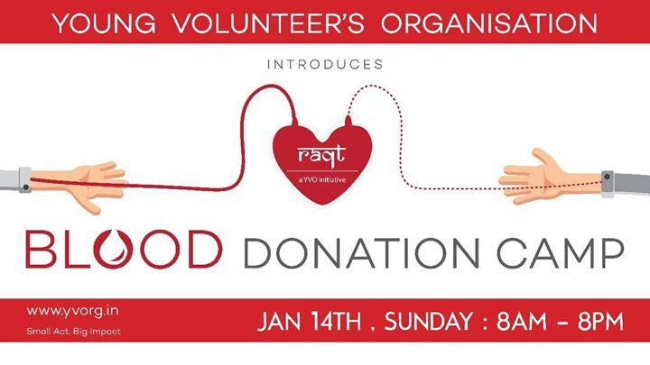

RAQT - YVO's Blood Donation Drive
It's going to be the one of the most hygienic, well-organized Blood Donation Camp supported by the Best Blood Banks and Hospitals in Mumbai. One painless prick will save a life! 900 bottles of blood are required in the city of Mumbai every single day. Every healthy person should donate blood, nature replaces your body with a fresh pint of blood. Get your Blood Recycled. Be a RAQT Donor. SAVE THE DATE Sunday, 14th January 2021, 8 am to 8 pm Bhatiawadi Banquet Hall, Ghatkopar